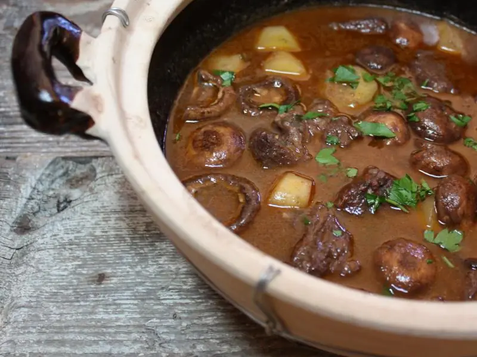

Фото: Andrea Nguyen, CC BY 2.0

Картофельное рагу с грибами
Тушёная картошка с шампиньонами, морковью и томатом, сытно без мяса
60 мин4 порц.315 ккал на порциюБ 10 · Ж 12 · У 43Русская кухня
Продукты на 4 порц.
- Картофель7 шт
- Шампиньоны400 г
- Лук репчатый2 шт
- Морковь2 шт
- Томатная паста1 ст. л.
- Чеснок2 зуб.
- Растительное масло3 ст. л.
- Вода1,5 стак.
- Лавровый лист1 шт
- Соль1,5 ч. л.
- Перец чёрный молотыйпо вкусу
- Укроп по желаниюпо вкусу
Как готовить
- Грибы нарежьте пластинами, лук кубиком, морковь полукружками, картофель крупными кубиками.
- В казане или глубокой сковороде разогрейте масло на сильном огне и жарьте грибы 7-8 минут, пока не испарится сок и они не подрумянятся.
- Добавьте лук и морковь, жарьте на среднем огне 5 минут до мягкости.
- Вмешайте томатную пасту, прогрейте 1 минуту, затем добавьте картофель и горячую воду. Вода должна покрывать картофель наполовину.
- Посолите, положите лавровый лист, накройте крышкой и тушите на слабом огне 25-30 минут, пока картофель не станет мягким при проколе.
- За 2 минуты до конца добавьте выдавленный чеснок, перец и укроп.
Совет. Грибы жарьте в один слой на сильном огне: если их много, они потекут и сварятся вместо жарки.